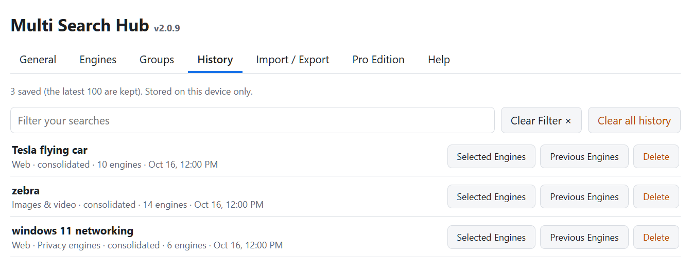
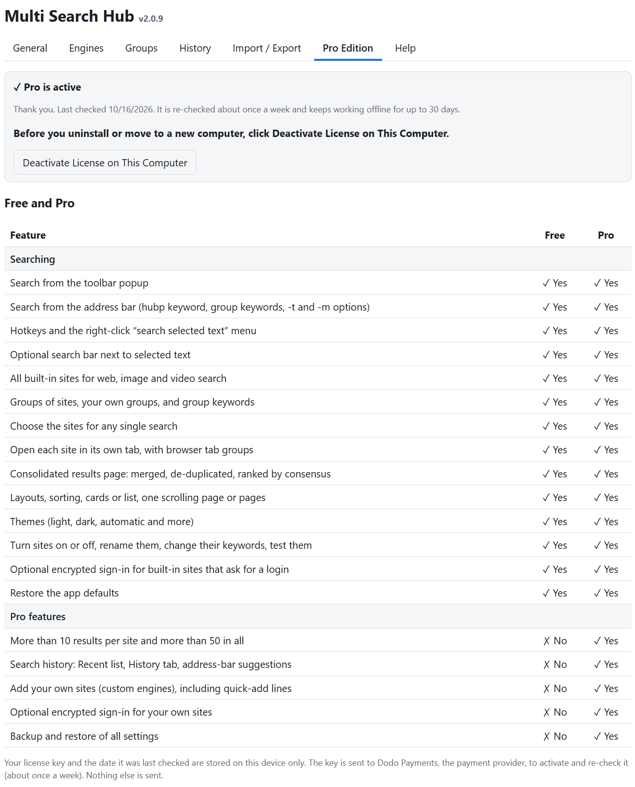

Start a search
Pro uses the same extension and search interface as Free, with additional result capacity and configuration. Pin the extension, open the SSW, enter a phrase, and select a group and search type. Select One consolidated tab or Individual tabs.


Work with groups
Web contains the entire engine catalog. The other built-in groups narrow that catalog to relevant image/video, social/community, or privacy engines. Check or clear engines to define each group's saved selections; Pro can create custom groups.


Consolidated results
Choose By engine to view separately labeled engine sections, or a combined layout to de-duplicate matching URLs. Available appearance controls include Cards/List, sort order, paging, and maximum results. Unlike Free, Pro permits higher result limits.


Manage search engines
On Options → Engines, search the engine catalog, enable or disable engines, inspect URLs and keywords, and test configured readers. Pro can add custom engines and assign them to groups. A site marked as external-only cannot be merged automatically.


Review search history
Pro supports locally stored search history when enabled. Open History to filter, revisit or delete previous searches. The v2.0.9 SSW group-card history display is currently reported as defective and is not depicted here as working.

Back up and restore
Open Import / Export to download or restore JSON settings. Keep backups in a safe place. Encrypted credential-vault backup, when included, does not reveal or replace the need for the original master password. Review any restore confirmation before proceeding.

Activate or move Pro
After purchasing, open Pro Edition, paste your license key, and click Activate. To transfer Pro to a different computer, deactivate on the previous computer first. Do not post license keys publicly.


Shortcuts and assistance
To search through the address bar, type hub then Space/Tab and a command or query. For shortcut help, open Help. The v2.0.9 Help text erroneously references hubp; the extension manifest declares hub.